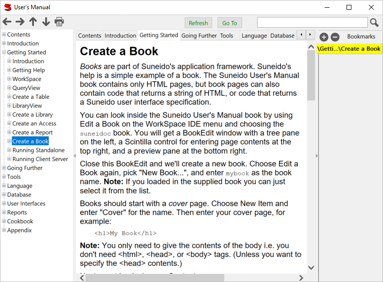
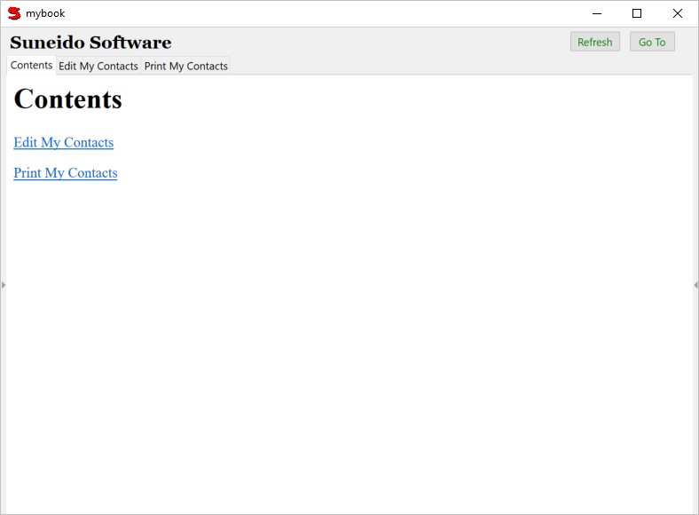
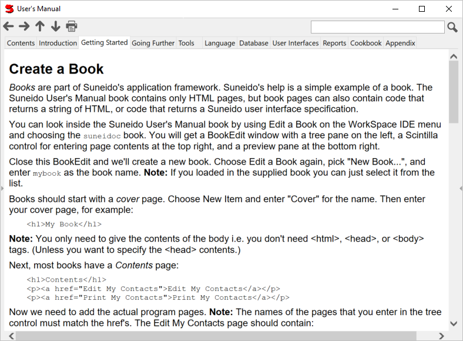

Books are Suneido's application metaphor. Suneido's help is a simple example of a book. The SuneiDoc book contains only HTML pages, but book pages can also contain code that returns a string of HTML, or code that returns a Suneido user interface specification.

Application books do not have the toolbar. And in this case the sidebars have been hidden.

Note: The Refresh and Goto buttons will only show up when Suneido.User is 'default'
Tool Bar
Tabs
The tabs below the tool bar show the main chapters of the book. Click on a tab to go to that section of the book. Within nested sub-menus, clicking on the tab you are in will take you "up" one level.
Bookmarks
Use the '+' to add a bookmark for the current page. You can also add a bookmark for the current page by simply double clicking on the bookmark area (not on a bookmark).
Use the '-' to remove the bookmark for the current page.
Click on a bookmark to go to that page.
You can drag the bookmarks to change the order, and right click to change their color.
Tree View
The optional tree on the left hand side shows the table of contents of the book. You can use it to see where you are and to move around in the book.
Books have a number of optional parts that you can hide or show. The screenshot above has all its parts showing.
The controllable parts are:
Here is the help book with all the optional parts hidden:

Note: If run in a persistent window, like the help is, then your configuration of these parts will be saved and restored. However, if you just use Open a Book from the IDE menu, your settings will not be saved.
See also: BookControl